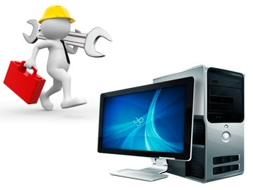

Hardware es una palabra inglesa que hace referencia a las partes físicas tangibles de un sistema informático, es decir, todo aquello que podemos tocar con las manos. Dentro del hardware encontramos una gran variedad de componentes tales como:
Eléctricos, Electrónicos, Electromecánicos, Mecánicos.

Podemos distinguir entre hardware básico, aquel dispositivo necesario para iniciar el funcionamiento de la computadora (dispositivos necesarios para el funcionamiento del ordenador), y el complementario, para realizar funciones más específicas. En este último caso son todos los componentes o accesorios que tiene el ordenador y que no son fundamentales para su buen funcionamiento.
Para que funcione correctamente el hardware, se necesita un software, donde se encuentra la parte electrónica. Con la combinación de software y hardware el ordenador puede funcionar a la perfección.
A continuación se muestran algunos de los componentes internos básicos de una computadora:
Conocida tambien como placa base o motherboard, es una tarjeta que permite la integración de todos los componentes de una computadora.
En su interior, igualmente, se halla instalado el firmware del BIOS, software de sistema que permite regular y probar las funciones elementales del hardware y hace las veces de soporte para la carga del sistema operativo.
La memoria RAM es la memoria principal de un dispositivo, es donde se almacenan de forma temporal los datos de los programas que estás utilizando en este momento. Sus siglas significan Random Access Memory, en español sería Memoria de Acceso Aleatorio, y es un tipo de memoria que se encuentra en cualquier dispositivo como en teléfonos móviles.
Es la parte encargada de procesar todas las instrucciones del software y del hardware, por el cual constituye el elemento más importante del computador. Su importancia es tal que se define como el cerebro del ordenador. Su objetivo es leer e interpretar las diferentes instrucciones que recibe de los programas para ejecutarlas en el monitor a una velocidad medida en gigahercios.
Es un tipo de memoria muy rápida que contiene un pequeño conjunto de instrucciones que el equipo utiliza con asiduidad para realizar sus tareas cotidianas. El equipo carga esas instrucciones en la caché usando algoritmos complejos para poder acceder a ellos de manera rápida, eficiente y sin más obstáculos de por medio.
La memoria ROM se llama así por las siglas en inglés Read Only Memory, o memoria de solo lectura. La mayor diferencia entre la memoria RAM y la ROM es que la ROM no es volátil, es decir, la información almacenada se retiene aunque apaguemos el PC. Este tipo de memoria tiene una capacidad muy inferior a la RAM y además es mucho más lenta.
El disco duro es donde se almacenan los datos, los cuales no se borran al apagarla, (a diferencia de la memoria RAM). Un disco duro no solo guarda tus archivos personales o de trabajo, sino todo el código requerido para tu sistema operativo, los navegadores que se utilizan para conectarte a internet, los controladores de tus accesorios y todo lo demás.
BIOS son las siglas en inglés de «Basic Input Output System«, que significa algo así como «Sistema básico de entrada y salida». Es un firmware instalado en una memoria ROM (no volátil), frecuentemente en un chip dedicado. Es un elemento fundamental en el arranque de un PC porque es el puente entre el hardware y el software del sistema.
Se encarga de transformar una corriente eléctrica alterna en una corriente eléctrica continua transmitiendo la corriente eléctrica imprescindible y necesaria a los ordenadores para el buen funcionamiento y protección de estos. Son conocidas dos tipos de fuentes de poder: Fuente de Poder AT y Fuente de Poder ATX.
Es un elemento de los ordenadores que descifra y decodifica el lenguaje que se produce dentro del procesador del equipo para convertirla en símbolos, imágenes y representaciones que pueden ser entendidas por el usuario final, la tarjeta de video es el dispositivos que procesa el resultado final que el sistema elabora para la computadora.
(c) Todos los derechos reservados Diseñado por Prof Yadira Molina-2021